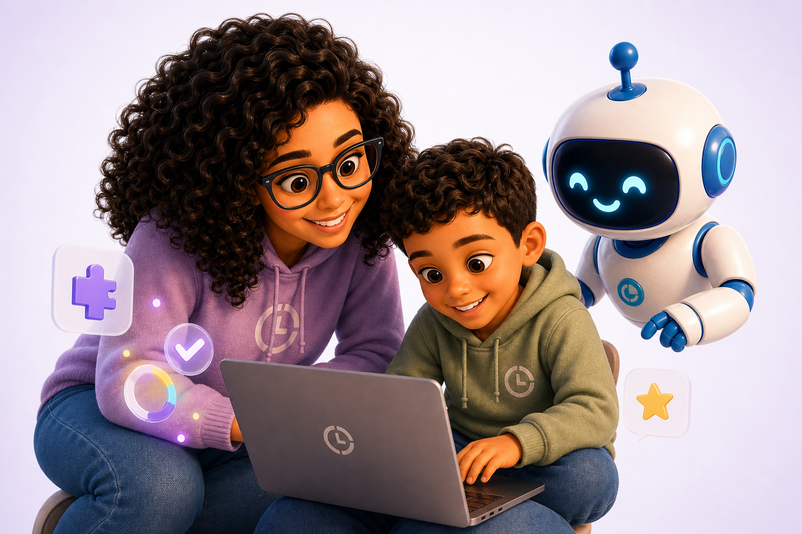
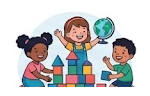
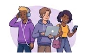
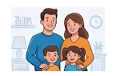
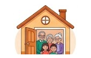
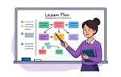
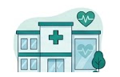
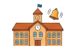
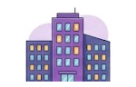

Aprendizagem Personalizada
Conteúdos adaptados ao ritmo, perfil, interesses e necessidades de cada aluno.
Cursos adaptados, inteligência artificial, atividades, jogos educativos, áudio, vídeo e diferentes formas de ensinar para que cada pessoa encontre o caminho que funciona melhor para aprender.

Pensada, testada e feita com empatia para atender diferentes formas de aprender.
Design acessível, cores que não cansam os olhos, fontes legíveis, tamanho de fonte ajustável e experiência pensada para o conforto e a inclusão.
Conteúdos adaptados ao ritmo, perfil, interesses e necessidades de cada aluno.
Converse por texto, áudio ou vídeo e receba apoio durante toda a sua jornada de aprendizagem.
Vídeos, leitura, áudio, atividades e jogos trabalhando juntos para reforçar a aprendizagem.
Iremos mapear seu perfil, preferências, objetivos, hiperfoco e aspectos emocionais.
Escolha entre cursos NoSeuTempo ou envie conteúdos externos para adaptar.
Texto simplificado, áudio, vídeo, atividades de múltipla escolha e jogos educativos.
Jogos que estimulam atenção, memória, leitura, raciocínio e motivação.
Converse por texto, áudio, tire dúvidas, peça exemplos e receba apoio sempre.
Converse por vídeo quando estiver pronto para avaliar e identificar pontos de melhoria.
A plataforma considera seus sentimentos e acompanha sua motivação, confiança e engajamento.
Não existe pressão por velocidade. O foco está na evolução contínua e real.
Geramos relatórios mensais com seus avanços, conquistas e pontos a melhorar.

O NoSeuTempo nasceu da história de uma mãe neurodivergente e de seu filho neurodivergente, que enfrentaram juntos os desafios de uma educação que não se adaptava a eles.
Por isso, criamos uma plataforma que coloca empatia, inclusão e autonomia no centro de tudo.
Cores, fontes, contrastes e navegação pensados para diferentes perfis cognitivos.
Porque cada mente é única e merece ser compreendida.
Recursos que tornam o aprendizado mais acessível e confortável para todos.
Seus dados protegidos com responsabilidade e transparência.
Estratégias validadas por estudos e práticas reais de aprendizagem.
Um espaço seguro para aprender, errar, tentar e evoluir.
Para quem aprende, acompanha, ensina ou acolhe. Uma lista feita com cuidado para lembrar que cada pessoa tem um jeito próprio de evoluir.

Crianças
Adolescentes
Pais e Responsáveis
Famílias
Professores
Clínicas
Escolas
Empresas